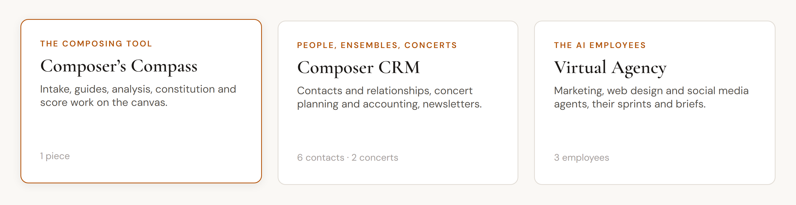
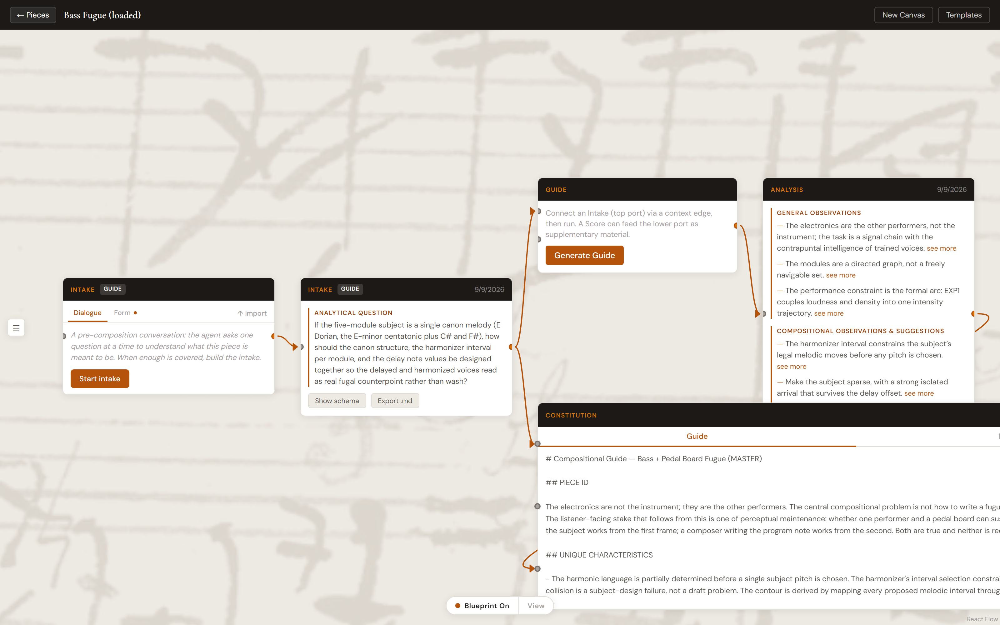
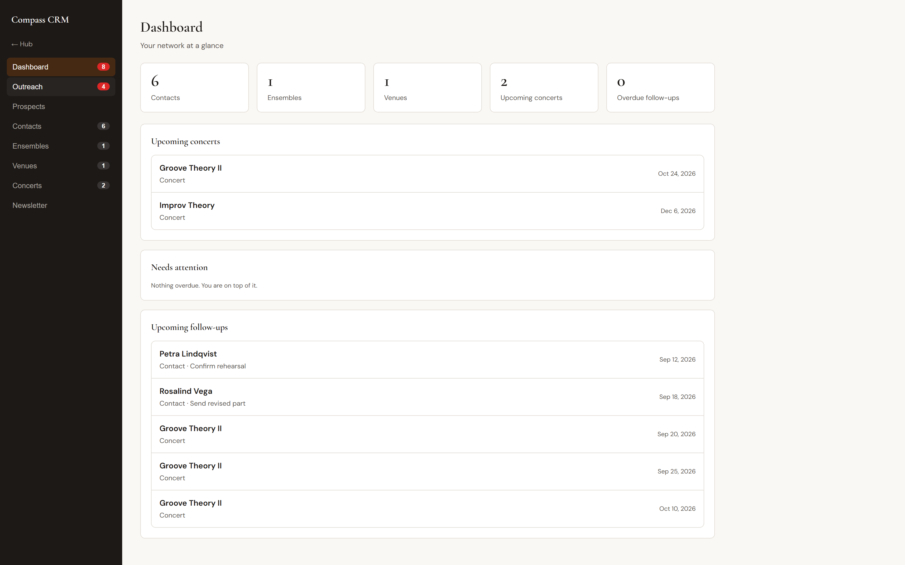
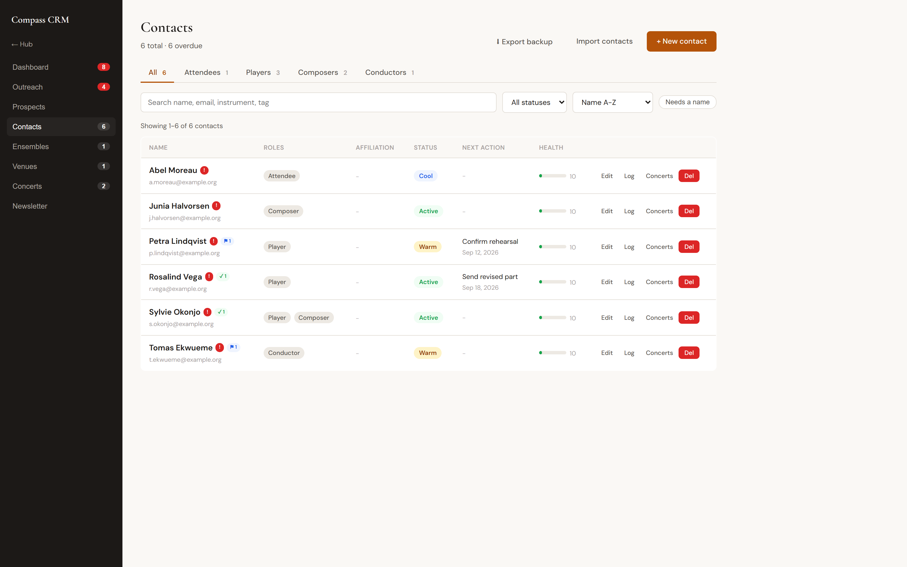
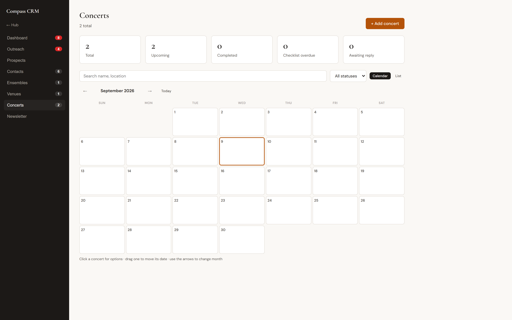
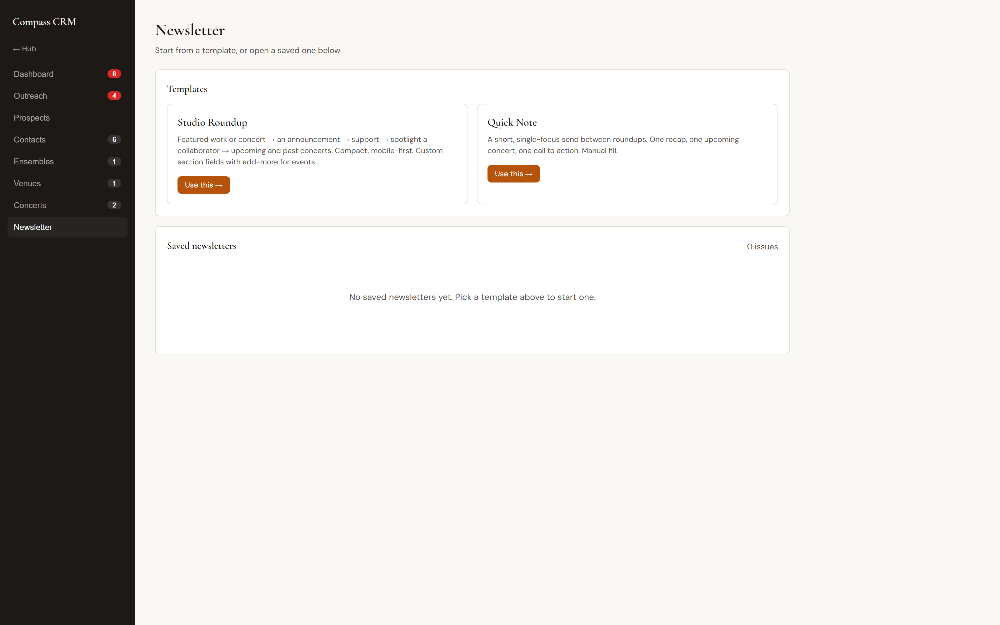
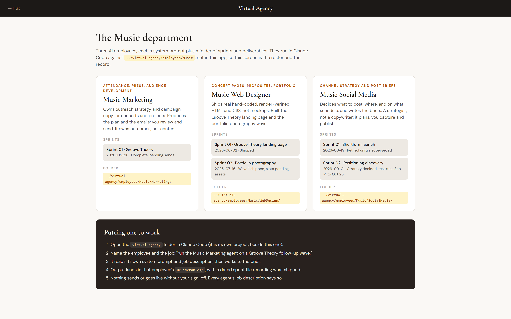

An AI composer assistant that does not compose music. It learns a composer's process and
augments their creative capacity through a structured protocol in the background and a simple
interface in the foreground.
Active research projectReactClaude APIModel Context Protocolmusic21VerovioChromaDBMusicXML

Three tools, one local store. The three tabs below open the three tools above.
What the tool actually produces
Every intake resolves to one question the piece has to answer. This is the question the tool
generated for a fugue for double bass and pedal board, and it is the difference between musical
analysis and a generic chat response:
If the five-module subject is a single canon melody (E Dorian, the E-minor pentatonic plus C# and
F#), how should the canon structure, the harmonizer interval per module, and the delay note values
be designed together so the delayed and harmonized voices read as real fugal counterpoint rather
than wash?
A canvas of nodes, not a chat window
Each node is a stage of thinking, and a wire between two nodes means "use this as context for
that." The reasoning chain is visible and editable rather than buried in a scrolling
conversation, so a composer can see exactly what the agent was given before it said anything.

A real piece on the canvas: Intake to Intake artifact to Guide to Analysis to Constitution. The
background is Beethoven's Große Fuge autograph.
Method
The life cycle of one piece
The documented process for Fugue for Bass and Pedal Board, the piece with the most
complete process record. One rule governs the whole experiment protocol:
One variable changed per run. One conversation per run. Evaluate cold.
Stage 01 · Intake
State the piece, including what is undecided
An eight-section intake captures what the piece is meant to be. Blank is data: the
harmonic language section was deliberately left empty and marked as the load-bearing
open question, because approximating it would have taught the agent a decision the
composer had not made.
Stage 02 · Paired runs
Change one variable, run it twice
The same intake runs through two fresh conversations differing by exactly one variable,
such as model choice or extended thinking. Each run emits a four-section guide (piece
identity, unique characteristics, unexplored territory, recommended paths) and a
condensed one-sheet.
Stage 03 · Annotation
Mark every claim by hand
Each claim is marked accepted, rejected or mixed, with a written justification. The
division of labour is explicit: the model performs inline rubric marking only, while
checks for hallucination and incorrect technical claims stay the composer's
responsibility.
Stage 04 · Rule extraction
Promote findings into the system prompt
Findings become entries in a do-and-don't rule bank, each carrying the run it came from,
and those rules are written into the system prompt. One filter governs entry: would this
apply equally to a string quartet, a solo percussion piece and a pop song? If not, it
belongs to that piece's constitution.
Stage 05 · Comparison
Compare the two runs, not a score
The primary evaluation artifact is a structured comparison document, not a number: where
the runs agree, where they diverge, what is unique to each, and what the controlled
variable produced. Its sharpest output was a corrective aimed at the composer's own
aesthetic blueprint, that this is the one piece where the groove instinct is
architecturally wrong.
Stage 06 · Constitution
Resolve divergence into decisions with provenance
A dialogue resolves disagreements between runs into numbered decisions, each recording
which run produced it. The document keeps two sections that matter more than the
decisions: open questions, and decisions dropped where the composer overruled the model.
Stage 07 · Master guide
Compose one guide from both runs
The runs merge by section dominance: structural framing from the run that reasoned
better structurally, mechanism detail from the one that went deeper. The output reasons
from worked precedent, citing Contrapunctus IV and IX and Lachenmann's notation
practice, then converts that into dated decisions.
Stage 08 · Notation
Back to the score, captured automatically
The composer writes. A file watcher picks up each new score file, validates it with
music21 and writes a structured sidecar describing the material, embedded for later
semantic retrieval. This piece has reached a validated five-measure canon subject. It is
in progress, not finished.
Current state
What is in use, and what is built but idle
This is an active research project, so the state of each component is worth stating precisely.
Component
State
Detail
MCP server
In use
Roughly 25 tools across project context, artifact persistence, score analysis via music21, voice-leading checks and retrieval.
Score watcher
In use
Watches the scores directory, writes a JSON sidecar per file and embeds it. Verified end to end on this piece's sketch.
Retrieval
In use
Semantic search over 17 embedded score sidecars, so past material is findable by structural description rather than filename. A theory-library collection exists but holds no indexed books yet.
Evaluation protocol
In use
Rubric-governed annotation plus binary hallucination and technical-claim checks, with the two-run comparison as the primary artifact. Earlier numeric scoring was deliberately deprecated in favour of it.
Notation rendering
In use
Verovio in the browser with note-level selection, playback with a following cursor, and fragment capture into an ideas library.
Engraving and OMR
Implemented
MuseScore engraving and Audiveris optical recognition are written and self-tested as external subprocesses, but were not part of this piece's workflow.
The practice around the work
A composing career is not only composing. The CRM tracks players, ensembles, venues and
conductors, plans concerts down to a dated checklist and a profit-and-loss ledger, surfaces who
has gone quiet past their contact cadence, and drafts the outreach. The screens below use
clearly fictional sample records in place of real contacts.

Dashboard. One agenda folding together contact follow-ups and dated concert checklist items.

Contacts. Roles are tabs, and one person can hold several at once.

Concerts. Calendar and list views, with drag to move a date.

Newsletter. Structured sections with a live preview and a real send path.
AI employees with job descriptions and sprint records
The third tool is deliberately not a product surface. Each employee is a system prompt plus a
folder of sprints and deliverables, run in a coding agent against its own brief rather than
inside this application. The screen is therefore the roster and the record: what each one owns,
what it shipped, and where its files live. Every job description states that nothing sends or
goes live without human sign-off.

Three employees, their sprint history with real dates and outcomes, and the folder each works in.
Why it is built this way
The composer stays the author
It does not write the music
The tool produces questions, observations and decisions. Notes stay the composer's. Success is
whether a session opened a thread worth pulling, not whether it generated material.
Disagreement is recorded
Constitutions keep a section for decisions dropped when the composer overruled the model. A
process that only records agreement cannot be inspected later, and cannot be taught.
It can teach the process
Because every stage is an artifact with provenance, the method is legible to someone learning
to compose, not only to the person who built it. That is what makes it a curriculum.
Screens captured from the running application. Composer's Compass shows a real piece and its real
generated output; CRM screens use fictional sample records. The bass and pedal board fugue is in
progress, and its documented process record runs from intake through first validated sketch.